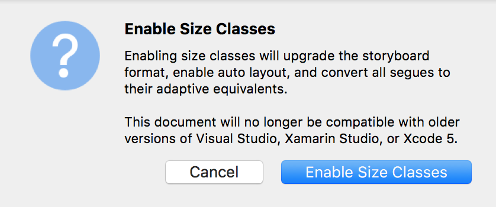

Duration
10 minutes
Lab Goals
In this exercise, we'll update constraints based on the size-class of the device at runtime to better present our UI on different screen sizes.
You can continue from the prior exercise, or use the completed project in the Exercise 3 folder.
Steps
Enable Size Classes
- Open the Xamarin.iOS Designer by opening Main.storyboard.
- Click on an empty area of the design surface to ensure no views are selected.
- In the Properties pane, ensure Use Size Classes is checked. (Press the Enable Size Classes button on the displayed popup, if enabling for the first time.) 
Increase the Image Size constraints for large screens
We'll increase the displayed size of the monkey image to better use the avaliable screen space on larger screens like iPads.
- Change the storyboard visualization to any of the iPads. Remember that iPads have regular widths and heights for both portrait and landscape orientations.
- Press the Edit Traits button and check both Edits apply to Regular Width only and Edits apply to Regular Height only.
- Select the image and find the Width and Height constraints in the Properties Pane's Layout tab.
- Change the Constant for both constraints to 350.
- Optionally press the Done Varying button to return to editing the default Any Any mode.
- Change the visualization device between iPads and iPhones. The image size on the design surface should change.
- Run the application on any iPad simulator and verify the image is larger at runtime.
Summary
In this exercise, we changed constraints based on the size class to customize our UI for different screen sizes.